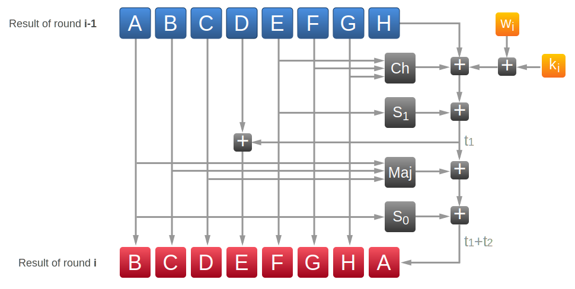

Currently our message is 480 bits long (60 bytes). We need to append to the message its length in bits as a 64-bit integer and make the total length at least 512 bits long (64 bytes) or multiple of it. The length should be appended at the very end of the message. Right after the message we add one bit equal to 1 and then put zeros to make total length in bits multiple of 512.
Your message ↓ Normalized message
Here gray bytes represent padding (additional bits to make the message length multiple of 64) and red bytes shows encoded length of the message in bits.
Now, when we have the message of correct length, we can finally start hashing.
Output of any hashing function should look as random as possible. So it makes sense to add some randomness from the very beginning. In SHA-1 algorithm all initial values were chosen by NSA, who developed that algorithm (yes, for real). So people were thinking, what if NSA included some kind of backdoor in these constants to be able to get some information about the message just by looking at the hash?
In SHA-256 initial hash values and round constants are much more transparent. They come from fractional parts of square and cubic roots of prime numbers.
We will need 8 initial hash values h and 64 round constants k. h are taken from square roots of first 8 prime numbers, i.e. 21/2, 31/2, 51/2, ..., 191/2. k are taken from cubic roots of first 64 prime numbers, i.e. 21/3, 31/3, 51/3, ..., 3111/3.
← h0 → 21/2 ↓ Decimal representation 1.4142135623 ↓ Fractional part 0.4142135623 ↓ HEX representation 0.6a09e667 ↓ Initial hash value 6A 09 E6 67
← k0 → 21/3 ↓ Decimal representation 1.2599210498 ↓ Fractional part 0.2599210498 ↓ HEX representation 0.428a2f98 ↓ Round constant 42 8a 2f 98
What we are going to do is the following:
In every round hash values change. For the first round of the first chunk we use initial hash values from Step 2. These rounds look a bit messy, but it is what you want to make the output as random as possible.
Our chunk contains 512 bits and in every round we will work with 32-bit numbers. As we want to do 64 rounds, we need to generate 64 32-bit words from our chunk.
If we split our chunk to 32-bit words, we will get 16 words. To generate the rest 48 words we use a combination of previous words:
wi = wi-16 + s0(wi-15) + wi-7 + s1(wi-2)
Here s0(w) and s1(w) are calculated as follows:
s0(w) = (w ⋙ 7) ⊕ (w ⋙ 18) ⊕ (w ≫ 3)
s1(w) = (w ⋙ 17) ⊕ (w ⋙ 19) ⊕ (w ≫ 10)
⋙ means right rotation (circular shift of bits when bits are removed from the end of the word and prepended to the beginning), ≫ means right shift (last bits are removed, zeros are prepended). For example 10011101 ⋙ 2 = 01100111 and 10011101 ≫ 2 = 00100111. Symbol ⊕ means XOR operation.
Here you can see how every word is calculated:
← Chunk 0 → ← w0,0 → Directly from message ↓ + + + = ↓
If it is not completely clear how s0 and s1 were calculated, you can look at it closer:
Show how to calculate s0 and s1
s0 ↓ ⊕ ⊕ ↓ s1 ↓ ⊕ ⊕ ↓
Now, when we finally made all preparations, calculated all the constants, words and initial hashes, we can start.
During calculations we will be messing with 8 variables - A, B, C, D, E, F, G, H. We initialize them with our hash variables h0-h7. In every round we will be calculating another 6 variables - S1, ch, t1, S0, maj and t2.
In round i we calculate them as follows:
S1 = (Ei-1 ⋙ 6) ⊕ (Ei-1 ⋙ 11) ⊕ (Ei-1 ⋙ 25)
ch = (Ei-1 & Fi-1) ⊕ ((¬Ei-1) & Gi-1)
t1 = Hi-1 + S1 + ch + ki + wi
S0 = (Ai-1 ⋙ 2) ⊕ (Ai-1 ⋙ 13) ⊕ (Ai-1 ⋙ 22)
maj = (Ai-1 & Bi-1) ⊕ (Ai-1 & Ci-1) ⊕ (Bi-1 & Ci-1)
t2 = S0 + maj
Hi = Gi-1
Gi = Fi-1
Fi = Ei-1
Ei = Di-1 + t1
Di = Ci-1
Ci = Bi-1
Bi = Ai-1
Ai = t1 + t2
All variables should stay 32-bit long, so all summations are made modulo 232.
After 64 rounds we add obtained values of A, B, C, D, E, F, G and H to our hash variables h0-h7 and move to the next chunk. We repeat this procedure with all chunks and then concatenate all hash varuables togeather to recieve final result.
Calculations look terrible, so I would better put an interactive picture. Click on any of the squares to figure out the result.
Click on any of the squares to figure out the result.
